Curve Tracer
The Curve Tracer Instrument is used to analyze characteristics of discrete semiconductors such as diodes and transistors.
The interface supports devices with two waveform generator channels and two differential oscilloscope inputs (Analog Discovery 1 and 2) or four single ended inputs (Electronics Explorer, ADP3450). Devices with one AWG channel can only use diode measurement. Devices with two oscilloscope channels, one AWG channel and support for AWG on power supply, like ADP2230, can also perform transistor measurements.
When used with the Analog Discovery Transistor Tester Adapter, built in relays are used to switch between specific measurements.
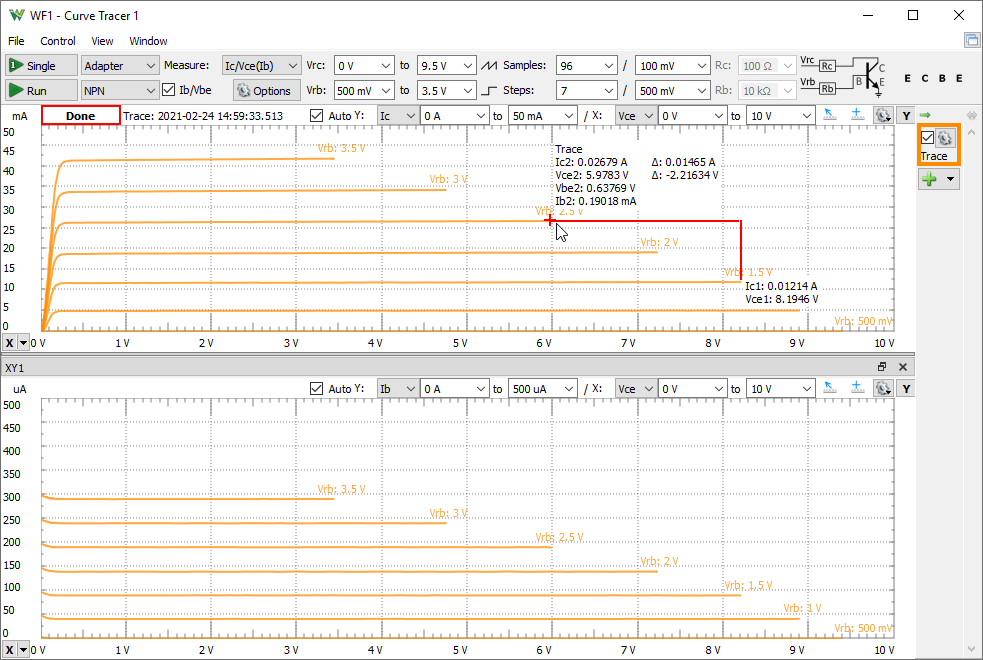
When the instrument is started, it takes control over the Scope and Wavegen device resources and other instruments using these are stopped and their status shows Busy. With the Transistor Tester Adapter the Supplies and Static IO resources will be also used.
1. Menu
See Menu in Common Interfaces.
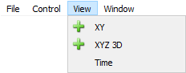
- XY: adds a new XY view.
- Time: opens/closes the Time view.
2. Control
The control area lets you adjust the settings for the curve tracer.
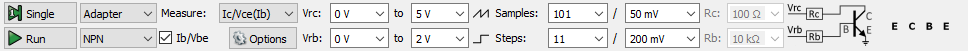
- Single button: starts a single analysis.
- Run/Stop button: starts repeated analysis or stops.
- Mode: lets you select Adapter when using Transistor Tester Adapter with Analog Discovery, Wavegen or W-Supplies to drive the collector/drain with positive-negative supply, follow the required connections for measurements.
- Type: lets you select the semiconductor type: Diode, NPN or PNP transistor, N or P channel FET.
- Measure: lets you select the performed measurement: I/V, I/V-mA, I/V-uA; Ic/Vce(Ib), Vce/Ic(Ib), Ic/Vce(Vbe), Ib/Vce, Ic/Vbe, Vbe/Ic, Ib/Vbe, Ic/Ib (hFE); Id/Vds, Id/Vgs, Vds/Vgs(Vd)
- When using Adapter additional measurements can be checked, like for Ic/Vce or Vgs it will also perform "Ib/Vbe" or "Vgs". This will disable the repeated run.
- The options contain the following:
- Rate: lets you specify the sample rate.
- Sweep: lets you select Auto or Multiple, to force performing the slopes in separate captures.
- Emitter: lets you specify the emitter voltage, virtual ground. With Adapter this is automatically set to +/-5V.
- Probe: lets you specify the oscilloscope probe impedance. It is automatically set based on the connected device.
- IrcMax: lets you specify the maximum collector/source current for higher resolution measurement.
- IrbMax: lets you specify the maximum base/gate current for higher resolution measurement.
- Calibrate: lets you calibrate the output and input offset errors.
- Calibration: shows the offset adjustment for different channels and ranges.
- Vra/Vrc/Vrd: lets you specify the start and stop voltage applied on the resistor for diode anode, transistor collector or drain.
- Vrb/Vrg: lets you specify the start and stop voltage applied on the resistor for transistor base or gate.
- Slope: lets you select which channel will use step or slope . This is automatically adjusted based on the selected measurement.
- Steps: lets you specify the number of steps samples, or the '/' voltage step.
- Samples: lets you specify the number of samples for each slope, or the '/' voltage step.
- Ra/Rc/Rd, Rb/Rg: lets you specify the (anode/collector/drain, base/gate) resistor values when used without Adapter.
- The circuit drawing shows the connections. When used without adapter the required Wavegen and Scope connections are show at the end of the control toolbar.
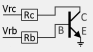 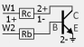 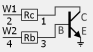 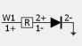
3. Trace/Reference
The current analysis is performed in the Trace and this can be saved as Reference for comparison.
The toggle button on the left enables the auto-hide of the toolbar. The button on the right changes the width in four steps.
The check-box shows or hides the respective trace in the plots.
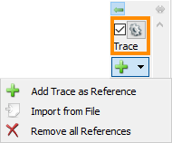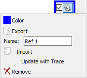
The trace options contains the following:
- Color: sets the trace waveform color.
- Export: opens export window with the respective trace data, see Export in Common Interfaces.
- Name: specifies the trace name.
- Import: lets you import data from file.
- Update with Trace: updates the Reference trace with the Trace data.
- Remove: removes the Reference trace.
4. Views
The main plot is an XY view showing the status of the capture.
It lets you toggle the Auto scaling, which adjusts the axes based on data on new capture or channel selection.
The X and Y channels can be selected and manual set the start and stop values of the axes. The axis can be adjusted also with mouse drag and scroll on the left and bottom sides.
See Plots in Common Interfaces and Tracer specific options:
- Auto XY: when checked the X and Y channels are adjusted based on the Measurement selection.
- Step Labels: check to show labels at the end of each step curve.
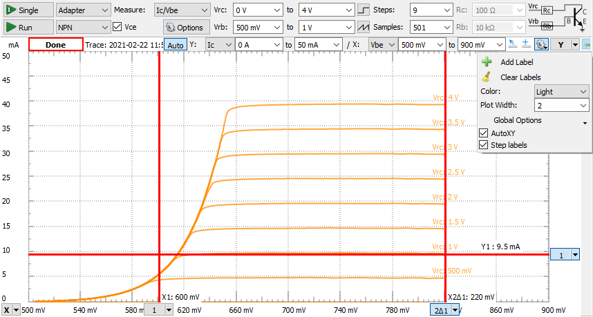
4.1 Quick Measure
The measurements can be used as Free position or finding the closest Point on the curve. See Quick Measure in Common Interfaces.
4.2 Cursors
X cursors can be added from the bottom-left corner and Y cursors from the top-right corner. See Cursors in Common interfaces.
4.3 XY
Additional XY views similar to the main XY plot can be added from the View menu.
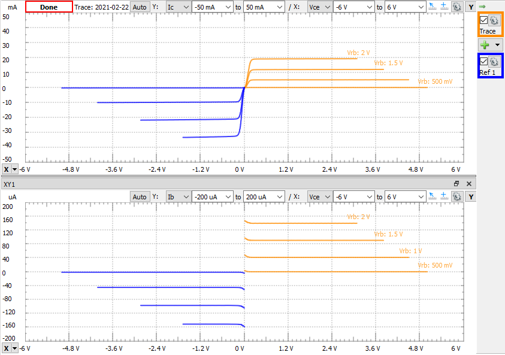
4.4 Time
The time plot shows the Trace data in time domain.
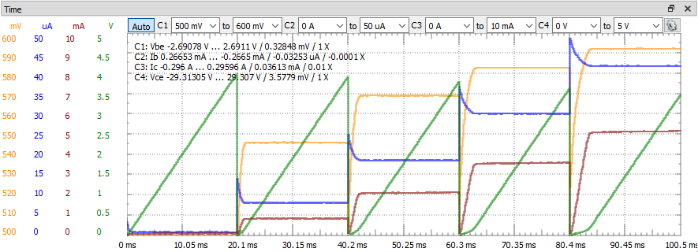